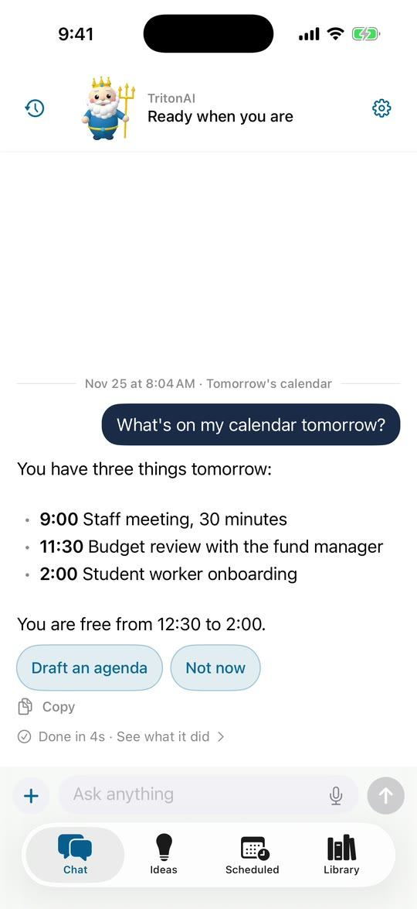
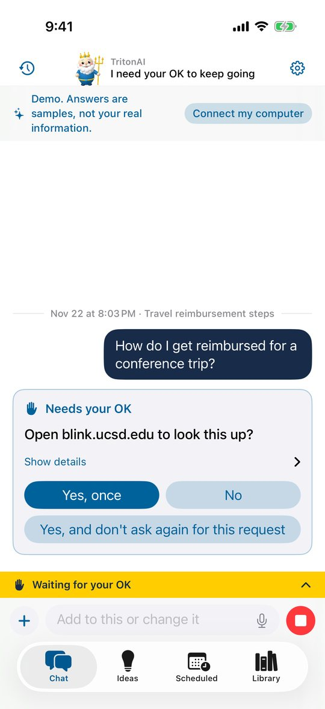
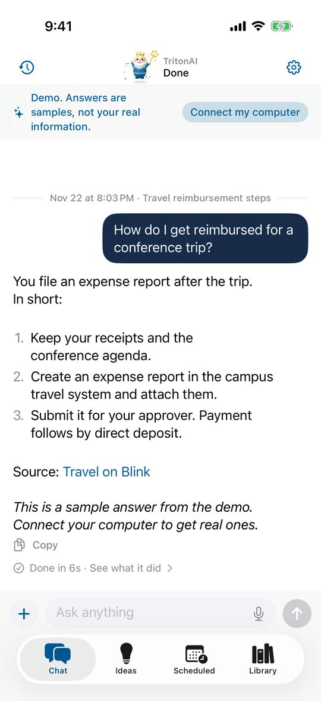
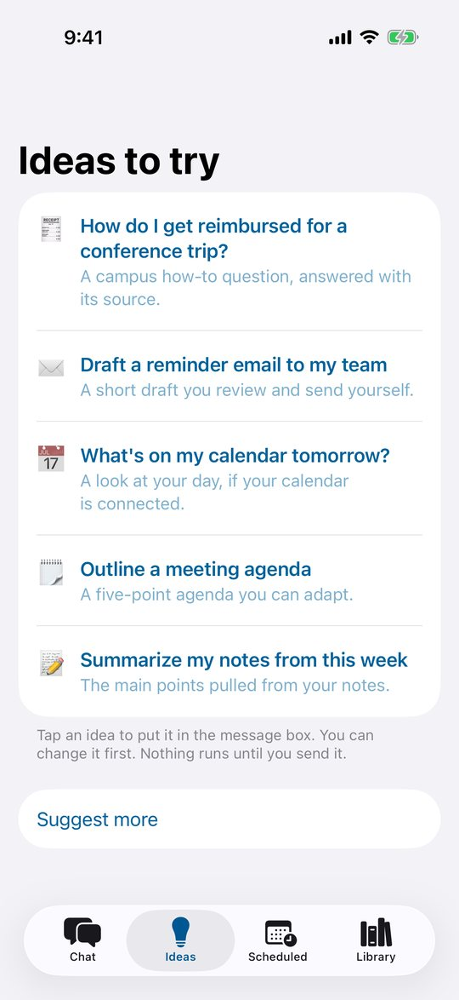

How things are done here
"How do I get reimbursed for a conference trip?" You get the steps and a link to the campus source.
For iPhone · UC San Diego staff
Ask from your phone, in your own words. The TritonAI Harness on your own Mac or PC does the work, and the answer shows up in one friendly, running chat.
Free. Requires iOS 18 or later and TritonAI Harness on your Mac or PC.
Tap a request below to see how it works.
Try it. These are sample answers.
About a minute and a half of real UC San Diego questions, asked from the phone and answered by TritonAI Harness on a computer.
Recorded in the iPhone simulator connected to a real TritonAI Harness. Waiting time is shortened. No sound.
No special wording. Type it or say it, and add a photo or a document if that helps.
"How do I get reimbursed for a conference trip?" You get the steps and a link to the campus source.
An email, an agenda or a summary to review. Nothing is sent until you send it yourself.
"What is on my calendar tomorrow?" Works with the mail, calendar and files you have set up in TritonAI Harness.
Attach a photo or a document and ask about it. Files the assistant saves on your computer open right on your phone.
Have a request run every day, on weekdays or once a week. The answer is waiting in your chat.
The Ideas tab suggests ready-to-send requests. Tap one, change it if you like, and send.
The phone app reaches whatever is turned on in TritonAI Harness on your computer. Campus knowledge works out of the box. The rest are plugins you sign in to once, on your computer.
Searches Blink and campus Services & Support, then answers with links. Policies, how-to steps, dates, fees and who to ask.
Ready out of the boxYour campus Outlook mail and calendar, Teams and OneDrive files.
PluginYour Drive files, Docs and Sheets.
PluginThe workbooks and dashboards you have access to.
PluginCampus forms and the apps built on them.
PluginTickets assigned to you and where they stand.
PluginYour diagrams and your automated workflows.
Plugins"Every weekday at 8, tell me what is on my calendar." Built in.
Built inSomething not working? He drafts a note to the TritonAI team for you to send.
SkillWhat you see depends on which plugins and skills are switched on and signed in on your own computer. The assistant asks before it changes anything.
Your assistant lives at the top of the chat. One glance tells you whether he is ready, busy or finished. Tap him while he works to see each step. You can even give him a name.
Four tabs, and you may only ever need the first one.






The app walks you through it. Here is the short version.
On your Mac or PC, open TritonAI Harness and choose to connect a phone. It shows a code.
Point your iPhone at the screen. No account to create and nothing to sign in to.
Leave the Harness open on your computer and ask from wherever you are in the building.
Your phone talks only to your own computer. What you type, say or attach goes there and nowhere else. The app has no accounts, no analytics, no advertising and no tracking, and it collects no data.
UC San Diego staff who use TritonAI Harness on a Mac or PC. The app is a companion to the Harness and needs it to do real work.
Yes. Your computer does the work, so it needs to be awake with TritonAI Harness open. If it is not reachable, the app holds your message and sends it when the connection is back.
By default, yes. If you install Tailscale on both your phone and your computer, you can use the app from anywhere.
Not on his own. He writes drafts and asks before acting. What he is able to reach depends on what you have turned on in TritonAI Harness on your computer.
Yes. Tap "Try a demo first" on the opening screen. The demo uses sample answers and touches none of your information.
Nothing. The app is free.
Not today. The app is made for iPhone.
The setup and support page has step-by-step instructions, or email tritonai@ucsd.edu.